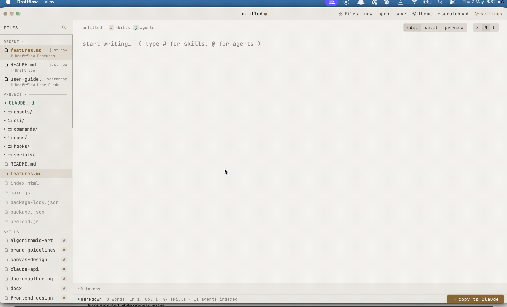
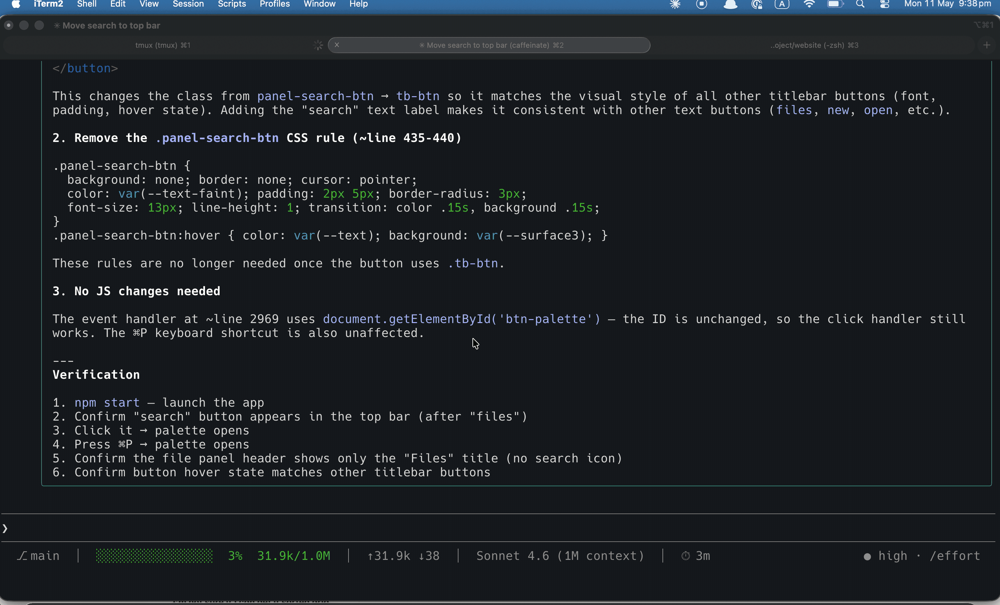

Write prompts, skills, and drafts in a focused editor. Skill autocomplete, live preview, token counting, and a direct bridge back to Claude Code.

Built for developers who spend time in Claude Code. Every feature earns its place.
Two ways to use Draftflow — tightly coupled to Claude Code, or standalone.
/df in Claude CodeThe slash command writes your content to ~/.claude/editor-bridge/request.md and opens it in Draftflow via the draftflow:// URL scheme.
Your file opens in the editor. Type # to fuzzy-match skills, / for agents. Contextual suggestions appear as chips as you type — no trigger needed.
Draftflow writes to ~/.claude/editor-bridge/response.md. Claude Code picks it up immediately and continues.
Open any .md file, write a prompt, and use "Send to Claude" to copy it to your clipboard — ready to paste into any Claude session.

/df pOpens Claude's previous response — a plan, a summary — in the preview pane for review. Write notes in the editor, then send them back.
The Plugin System gives you first-class access to the editor with a scoped API and nine granular permissions — no monkey-patching required.
~/.draftflow/plugins/<name>/. Drop the folder in and relaunch — no build step, no registry.
df-hello reference plugin ships with the app.
claude-haiku-4-5); if absent, suggestions are silently disabled.# to open a fuzzy search over your installed Claude Code skills — markdown files in your configured scan paths. Type / for agent autocomplete. Hover any result to preview the full skill description. Default scan path is ~/.claude; add more in Settings.claude-haiku-4-5 (fast and inexpensive). Results are cached per prompt to avoid redundant calls. Silently disabled when no key is set.~/.draftflow/plugins/<your-plugin>/ with a plugin.json manifest and an index.js entry point. Declare the permissions you need in the manifest — your plugin will only receive API methods for those capabilities. Export initMain(api) for main-process work and initRenderer(api) for renderer work. Relaunch Draftflow to load. The bundled df-hello plugin is a working reference implementation.github.com/sameera207/draftflow.